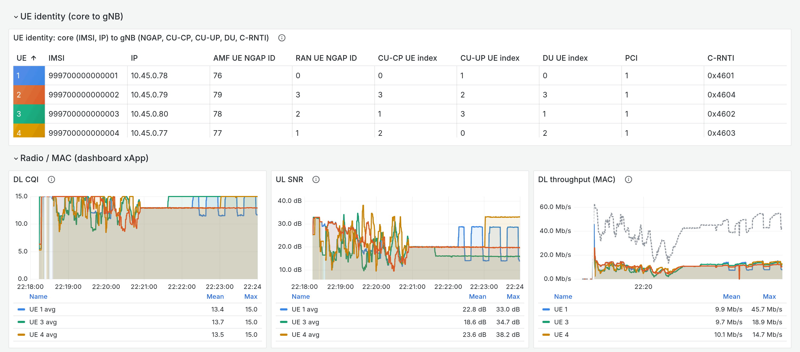

Demo 1: Cellular Digital Twin¶
Four UEs share one emulated 5G cell, each on its own channel. Switch any UE’s channel while traffic runs and watch its CQI and throughput follow.
Before you start: Parts 1 and 2 of the tutorial, up to and including “Recreate the gNB pod with its containers”.
Design and trace dataset: Cellular Digital Twins.
Runtime: about 5 minutes on a running cluster.
1. Base Channels¶
Each UE attaches on its base channel and returns to it when you stop its trace. By default every UE sits
at a static 30 dB (CQI 15). duranta-oai-ue/ue_channel_4ue.conf gives each UE its own: 30, 16 and
12 dB, and a UE that walks between 40 and 140 m at 30 km/h.
2. Traces¶
A trace is a CSV of DL and UL SNR, one row per 10 ms. duranta-oai-ue/ue_traces_4ue.conf names the
trace each UE plays from attach:
# ue trace
1 trace_1
2 trace_1
3 trace_5
4 trace_6
ul_noise_dbfs -65
UEs can share a trace, as ue1 and ue2 do here. bash scripts/trace_ctl.sh list shows the library: the
random walks trace_1 to trace_8, constant SNRs such as static_16db, and the mobility scenarios
ped_3kmh, veh_30kmh and veh_104kmh.
3. Run the System¶
Open four terminals on the testbed host.
Terminal 1: RAN¶
cd <your clone of edgeric-ocudu-jbpf>
export KUBECONFIG="$(k3d kubeconfig write janus-cluster)"
bash scripts/setup_zmq_chan_demo.sh 4 --ran --telemetry
The script stops everything still running, provisions four subscribers in the core, starts the broker and the gNB, and loads the telemetry codelets. After about 2 minutes it shows the gNB console. Start Terminal 2 when the console appears.
== [1/7] stop everything ==
...
== [2/7] core: IMSIs 999700000000001..999700000000004 ==
provisioned (0 added)
== [3/7] fresh jrtc-0 (clean app registry + jbpf IPC peer) ==
jrtc-0 ready
== [4/7] stage broker, UE and gNB configs; netns for 4 UE(s) ==
...
== [5/7] broker (4 UE) ==
[broker] C++ single-thread, gNB tx ipc:///tmp/zmq/gnb_tx -> 4 UE(s) -> gNB rx ipc:///tmp/zmq/gnb_rx
...
== [6/7] gNB (broker mode, dynamic pod-IP NG-U bind) ==
gnb tx_port=ipc:///proc/53983/root/tmp/zmq/gnb_tx
gnb started (bind=10.42.0.92)
gnb procs=1 ngsetup=1
fwd: fwd 127.0.0.1:30450 -> ('srs-gnb-du1-proxy.ran.svc.cluster.local', 30450)
upt codeletset loaded
dashboard xApp loaded
RAN UP. Broker for 4 UE(s); gNB connected to the AMF.
...
N2: Connection to AMF on open5gs-amf-ngap.open5gs.svc.cluster.local:38412 completed
==== gNB started ===
Type <h> to view help
Once the UEs attach, the console prints one row per UE every second. rnti is the UE’s C-RNTI; cqi,
mcs and brate are its downlink CQI, MCS and bit rate, and pusch its uplink SNR in dB. With traffic
running:
|--------------------DL---------------------|-------------------------------UL-----------------------------
pci rnti | cqi ri mcs brate ok nok (%) dl_bs | pusch rsrp ri mcs brate ok nok (%) bsr ta phr
1 4601 | 15 1.0 27 11M 254 0 0% 1.62M | 30.7 -30.0 1 27 334k 51 0 0% 0 260n 38
1 4602 | 11 1.0 10 6.7M 435 18 3% 967k | 16.7 -44.3 1 9 191k 59 0 0% 142 261n 38
1 4603 | 10 1.0 9 6.5M 425 17 3% 713k | 14.9 -46.2 1 6 152k 82 0 0% 198 260n 38
1 4604 | 15 1.0 27 11M 251 0 0% 1.33M | 30.7 -30.0 1 27 338k 51 0 0% 0 261n 38
Here 4601 is ue1 and 4604 is ue2 (Grafana’s UE identity table maps each C-RNTI to its UE). Both play
trace_1, so their CQI, MCS and SNR match.
Ctrl-C leaves the console and the RAN keeps running; bash scripts/gnb_console.sh reopens it.
Terminal 2: UEs¶
cd <your clone of edgeric-ocudu-jbpf>
export KUBECONFIG="$(k3d kubeconfig write janus-cluster)"
bash scripts/setup_zmq_chan_demo.sh 4 --ues --traces duranta-oai-ue/ue_traces_4ue.conf
Add --channel duranta-oai-ue/ue_channel_4ue.conf for four different base channels. The UEs attach in
about 20 seconds on their base channel, then start their traces at the same instant. t is the UEs’
shared air time.
traces from attach: ue1 trace_1 ue2 trace_1 ue3 trace_5 ue4 trace_6
== [1-6/7] the RAN of the last --ran ==
broker pid 53983 for 4 UE(s), UL noise -65; gNB up; telemetry on
== [7/7] 4 UE(s) ==
ue1: IMSI 999700000000001 chan: distance=50,speed=0,...,trace_ctl=/tmp/traces/ue1.ctl,ul_noise_dbfs=-65
...
tune: gnb + broker threads SCHED_FIFO; gnb, broker, UEs on CPUs 16-31,48-63
################ verify ################
ue1 ip=10.45.0.78 t 6.0 s, d 50.0 m, DL SNR 30.0 dB (ref -27.1 dBFS), UL SNR 30.0 dB, UL gain 8.4 dB
ue2 ip=10.45.0.79 t 6.0 s, d 50.0 m, DL SNR 30.0 dB (ref -27.1 dBFS), UL SNR 30.0 dB, UL gain 8.4 dB
ue3 ip=10.45.0.80 t 6.0 s, d 50.0 m, DL SNR 30.0 dB (ref -27.1 dBFS), UL SNR 30.0 dB, UL gain 8.4 dB
ue4 ip=10.45.0.77 t 6.0 s, d 50.0 m, DL SNR 30.0 dB (ref -27.1 dBFS), UL SNR 30.0 dB, UL gain 8.4 dB
...
== traces: duranta-oai-ue/ue_traces_4ue.conf ==
ue1 -> trace_1
ue2 -> trace_1
ue3 -> trace_5
ue4 -> trace_6
at t 8.0 s: ue1, ue2, ue3, ue4 switch at t 11.0 s
...
SETUP DONE. 4 UE(s) attached.
Keep this terminal for Section 4.
Terminal 3: Traffic¶
cd <your clone of edgeric-ocudu-jbpf>
export KUBECONFIG="$(k3d kubeconfig write janus-cluster)"
bash scripts/traffic_nue.sh start
watch -n 2 bash scripts/traffic_nue.sh status
Each UE gets one downlink TCP flow from the UPF:
ue1: DL started UPF -> 10.45.0.78:5201 (cc=cubic rate=unlimited, 3600s)
ue2: DL started UPF -> 10.45.0.79:5202 (cc=cubic rate=unlimited, 3600s)
ue3: DL started UPF -> 10.45.0.80:5203 (cc=cubic rate=unlimited, 3600s)
ue4: DL started UPF -> 10.45.0.77:5204 (cc=cubic rate=unlimited, 3600s)
watch then shows each UE’s goodput over the last 10 s, refreshed every 2 s:
ue1 11.0 Mbit/s (mean of last 10 s at the UE)
ue2 11.2 Mbit/s (mean of last 10 s at the UE)
ue3 6.2 Mbit/s (mean of last 10 s at the UE)
ue4 6.3 Mbit/s (mean of last 10 s at the UE)
total 34.7 Mbit/s
Terminal 4: Grafana¶
cd <your clone of edgeric-ocudu-jbpf>
export KUBECONFIG="$(k3d kubeconfig write janus-cluster)"
bash scripts/tcp_probe.sh
Dashboard: http://localhost:30490/d/upt-userplane (Ctrl-C stops the TCP row)
[tcp_probe] UE map: {'10.45.0.78': 1, '10.45.0.79': 2, '10.45.0.80': 3, '10.45.0.77': 4}
[tcp_probe] writing to http://localhost:30491/write
[tcp_probe] capturing on open5gs-upf-59bcf7bbb8-v7djt:ogstun
[tcp_probe] pcap linktype=101 l2_offset=0
Open http://localhost:30490/d/upt-userplane (admin / admin). The UE identity table maps each UE to its
IMSI, IP and C-RNTI, and the Radio / MAC row plots each UE’s DL CQI, UL SNR and MAC throughput.
tcp_probe.sh feeds the TCP row until you press Ctrl-C. From a laptop, forward the port first:
ssh -N -L 30490:localhost:30490 <user>@<testbed-host>.
4. Change Channels on the Fly¶
Terminal 2: UEs¶
trace_ctl.sh takes the UEs (1, 1,3, 2-4 or all) and what to play:
bash scripts/trace_ctl.sh status # what each UE plays now
bash scripts/trace_ctl.sh set 2 trace_3 # ue2 onto another random walk
bash scripts/trace_ctl.sh set 1,3 veh_30kmh # ue1 and ue3 onto one trace
bash scripts/trace_ctl.sh set all static_16db # every UE at 16 dB
bash scripts/trace_ctl.sh stop 4 # ue4 back to its base channel
The UEs named in one command switch at the same air time, 3 s after the command, with no gap:
$ bash scripts/trace_ctl.sh set 1,3 veh_30kmh
copied veh_30kmh.csv
ue1, ue3 -> veh_30kmh (looping)
at t 112.0 s: ue1, ue3 switch at t 115.0 s
ue1: trace veh_30kmh (30000 rows, looping) from t 115.0 s (set at t 112.9 s)
ue3: trace veh_30kmh (30000 rows, looping) from t 115.0 s (set at t 113.0 s)
now:
ue1: t 116.0 s, trace veh_30kmh row 99 (T 115.0 s), DL SNR 21.5 dB (ref -27.1 dBFS), UL SNR 21.6 dB, UL gain -0.0 dB
ue3: t 116.0 s, trace veh_30kmh row 99 (T 115.0 s), DL SNR 21.5 dB (ref -27.1 dBFS), UL SNR 21.6 dB, UL gain -0.1 dB
The CQI column in Terminal 1 and the Grafana panels follow within a second or two.
For an SNR of your own, write a CSV with the header t_s,dl_snr_db,ul_snr_db. Each row holds until the
next, and the trace loops:
printf 't_s,dl_snr_db,ul_snr_db\n0,20,12\n' > /tmp/dl20_ul12.csv
bash scripts/trace_ctl.sh set 3 /tmp/dl20_ul12.csv # ue3: DL 20 dB, UL 12 dB
printf 't_s,dl_snr_db,ul_snr_db\n0,25,25\n10,12,10\n20,25,25\n' > /tmp/fade.csv
bash scripts/trace_ctl.sh set 1 /tmp/fade.csv # ue1: a 10 s fade every 30 s
The dashboard below covers one pass through these commands, about 40 s apart: set 2 trace_3 at
22:19, set 1,3 veh_30kmh, set all static_16db at 22:21, the ue3 and ue1 CSVs, then stop 4 at 22:23.


Under static_16db every UE holds CQI 13. Then ue3 (green) rises to CQI 15 as its UL SNR drops, ue1
(blue) swings between CQI 15 and 11 with the fade, and ue4 (yellow) returns to CQI 15 on its base
channel.
Option |
Effect |
|---|---|
|
switch S seconds of air time after the command (default 3) |
|
play the trace once, then hold its last row |
|
return as soon as the UEs answer |
|
accept traces below 0 dB SNR (see Limits) |
5. Stop¶
bash scripts/traffic_nue.sh stop
bash scripts/stop_demo.sh # UEs, gNB, broker and tcp_probe
Then press Ctrl-C in Terminals 1 and 3.
Reference [To be updated]¶
Trace files¶
A trace is a CSV with the header t_s,dl_snr_db,ul_snr_db; further columns are ignored. t_s starts
at 0 and increases; each row holds until the next, with no interpolation; the trace loops with a period
of its last t_s plus its last step; and the SNRs apply as given, with no floors. The library files
have one row per 10 ms over 300 s.
bash scripts/trace_ctl.sh list # rows, loop length, DL / UL SNR min, median, max
python3 duranta-oai-ue/traces/gen_traces.py --all # rebuild the library (--only NAME for one)
python3 duranta-oai-ue/traces/gen_traces.py --check FILE.csv # what trace_ctl.sh checks before a switch
python3 duranta-oai-ue/traces/check_parity.py # the generator's copy of the model vs the UE's C++
gen_traces.py writes the library from the recipes in scenarios.conf with fixed seeds. walk
recipes are 2D random walks with path loss and log-normal shadowing; bounce recipes run the UE’s own
channel model. To add a random walk:
echo "trace_9 walk seed=9 speed_kmh=40 start_m=70 min_m=30 max_m=120" >> duranta-oai-ue/traces/scenarios.conf
python3 duranta-oai-ue/traces/gen_traces.py --only trace_9
bash scripts/trace_ctl.sh set 2 trace_9
Base channel table¶
ue_channel_4ue.conf has one line per UE: the starting distance in m, the speed in km/h (0 is static),
the range the UE moves in, the DL and UL SNR at the starting distance, and the shadowing in rms dB.
# ue dist_m speed_kmh min_m max_m dl_snr_ref ul_snr_ref jitter_db
4 50 30 40 140 25 25 4
SNR falls by 37.6 dB per decade of distance, with floors of 8 dB DL and 5 dB UL. ul_noise_dbfs is the
gNB noise floor, one value for the cell. Keep comments on their own lines: a comment after the values
reads as one more column.
How the UE replays a trace¶
With --traces, each UE’s channel option carries a control file, /tmp/traces/ue<n>.ctl in the UE
container. trace_ctl.sh validates the trace on the host, copies it to /tmp/traces/<name>.csv in the
container, and writes each UE’s control file: trace=, start= (the air time T) and loop=. A
normal-priority thread in each UE polls its control file every 100 ms and loads the trace; the radio
threads pick up the switch at T. The channel computation itself is on
Cellular Digital Twins.
Limits¶
--tracesneeds the C++ broker, which starts every UE on the same gNB sample and keeps their air times equal. Oneul_noise_dbfsapplies to the broker and every UE.Keep both SNRs at 0 dB or above. Below that the OAI UE misreports CQI, and a UE the gNB releases does not come back.
The gNB adapts the downlink once per 20 ms CSI report, so faster SNR changes show up as block errors.
stopreturns a UE to its base channel, which keeps the broker’s noise floor. For a link with no added noise at all, run Terminals 1 and 2 with--cleanand without--traces.
Troubleshooting¶
Symptom |
Fix |
|---|---|
|
start Terminal 1 first |
|
the UEs can join a RAN once: restart Terminal 1, then Terminal 2 |
|
give Terminal 1 the same |
|
restart Terminal 1, then Terminal 2; UE logs are in |
|
Terminal 2 ran without |
a UE answers |
it rejected the control or trace file; the message says why |
|
fix the trace, or pass |
|
the gNB container runs the |
|
rebuild |
all UEs attached, no throughput |
re-point the SMF at the UPF (Part 2) |